Settings Configuration
General Configuration
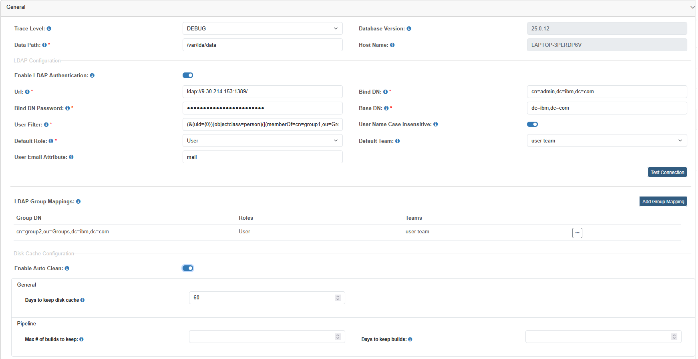
| Field | Description |
|---|---|
| Trace Level | The value of the trace level, by default it has five levels (TRACE, DEBUG, WARN, INFO, ERROR). |
| Database Version | IDA database version. |
| Data Path | IDA working directory data path, it’s read-only when running in a containerized environment. |
| Host Name | Host name of the current IDA instance. |
| Enable LDAP Authentication | Login to IDA with LDAP configuration. |
| URL | LDAP server URL. |
| Bind DN | LDAP server Bind DN. |
| Bind DN Password | LDAP server Bind DN Password. |
| Base DN | LDAP base DN for filtering users. |
| User Filter | LDAP user filter pattern, use ‘#’ to split multiple user filter patterns. |
| User Name Case Insensitive | Whether the LDAP server is case insensitive or not, default value is true. |
| Default Role | Default role assigned to LDAP user when user logs in IDA for the first time. |
| Default Team | Default team assigned to LDAP user when user logs in IDA for the first time. |
| User Email Attribute | User Email Attribute is used to synchronize LDAP user email into IDA user profile, when LDAP user logs in IDA for the first time. |
| LDAP Group Mappings | Map LDAP groups to IDA roles and teams. When LDAP user logs in IDA for the first time, mappings below are checked to assign roles and teams to the user. |
| Enable Auto Clean | Enable disk cache auto clean. Pipeline auto clean settings overwrite general auto clean settings. For all the disk cache information, check the Clean Disk Cache page under menu Administration. |
| Days to keep disk cache | If not empty, disk cache is only kept up to this number of days. |
| Max # of builds to keep | If not empty, only up to this number of builds are kept. |
| Days to keep builds | If not empty, builds are only kept up to this number of days. |
If LDAPS is used, LDAPS server certificate need to be exported and imported into IDA server.
Export and Import LDAPS Server Certificates on Liberty
- Export LDAPS server certificate into a file using below command:
openssl s_client -connect <LDAPS server host>:<LDAP server port> -showcerts </dev/null 2>/dev/null | awk '/-----BEGIN CERTIFICATE-----/,/-----END CERTIFICATE-----/' > ldapserver-cert.crtFor example:
openssl s_client -connect c97721v.fyre.com:636 -showcerts </dev/null 2>/dev/null | awk '/-----BEGIN CERTIFICATE-----/,/-----END CERTIFICATE-----/' > ldapserver-cert.crt - Import the LDAPS server certificate file from step 1 into Liberty using below command:
keytool -importcert -trustcacerts -file <LDAPS server certificate file> -alias <alias for the LDAPS server certificate> -keystore <Liberty truststore file> -storepass <password for the truststore > -storetype <type of the truststore> -nopromptFor example:
keytool -importcert -trustcacerts -file ldapserver-cert.crt -alias ldapserver-cert -keystore /opt/wlp/usr/servers/ida_server/resources/security/key.p12 -storepass idaAdmin -storetype PKCS12 -noprompt
Export and Import LDAPS Server Certificate on WAS
-
Log into WAS admin console, and click into Security -> SSL certificate and key management -> Key Stores and certificates
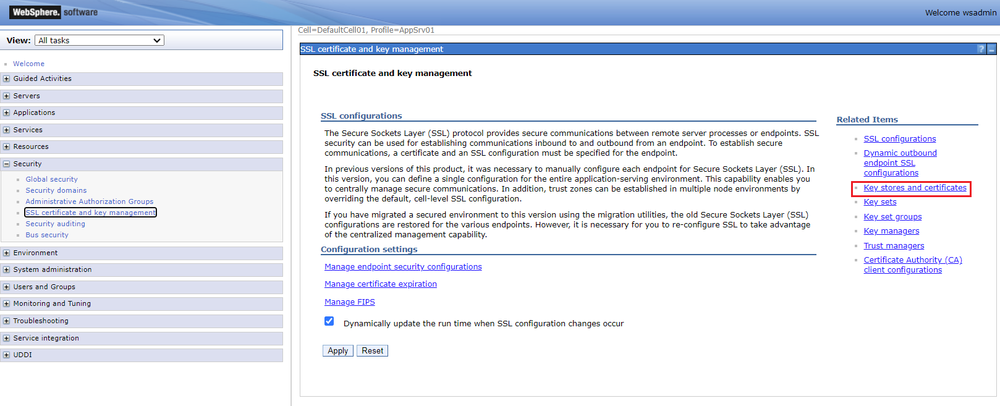
-
Click into NodeDefaultTrustStore, then click into Signer certificates
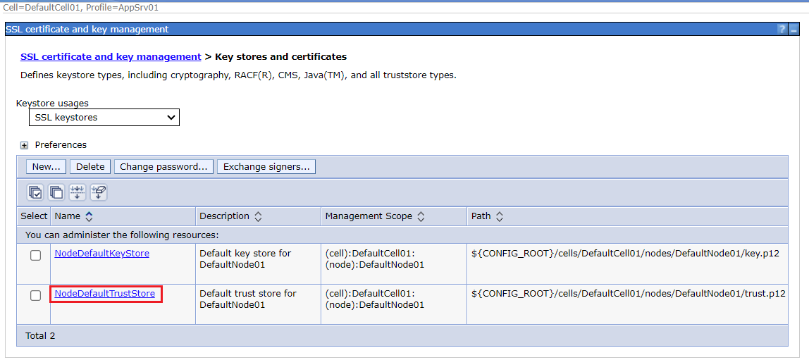
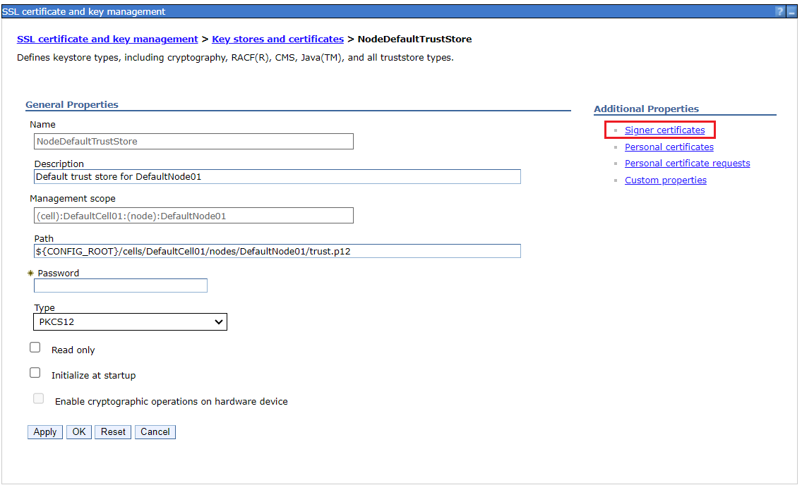
-
Click into Retrieve from port
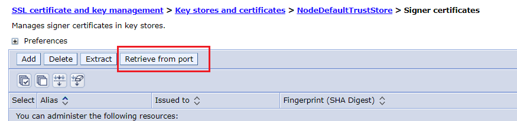
-
Enter LDAPS server host and port, then click Retrieve signer information. After the certificate info is retrieved, click OK and save the changes.
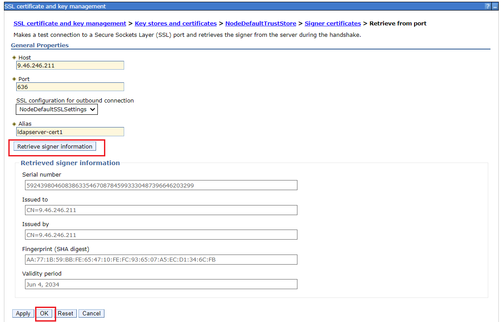
-
Then you’ll find the certificate is listed in Signer certificates.
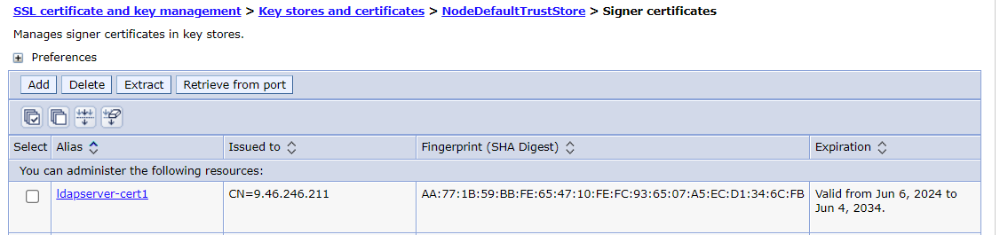
Test Configuration
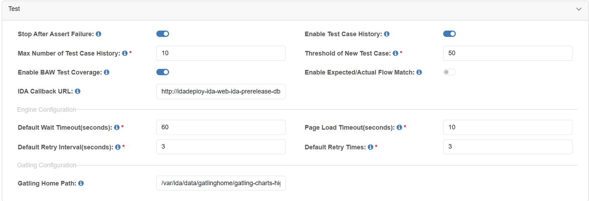
| Field | Description |
|---|---|
| Stop After Assert Failure | If not checked, the test case will keep running when the assertion fails. |
| Enable Test Case History | Enable saving test case history function. |
| Max Number of Test Case History | Set the maximum number of test case history for each test case, default value is 100. |
| Threshold of New Test Case | Threshold for generating test cases per process. |
| Enable BAW Test Coverage | Generate and show Test Coverage report on project dashboard. |
| Enable Expected/Actual Flow Match | If enabled, the test case will fail if expected and actual flow do not match. |
| IDA Callback URL | Callback URL for test command startRESTService’s selected asynchronous operation to return result, make sure it is accessible from BAW server. |
| Default Wait Timeout (seconds) | Default wait timeout for test commands and finding web elements, default value is 60. |
| Page Load Timeout (seconds) | Default page load timeout for opening and loading pages, default value is 10. |
| Default Retry Interval (seconds) | Default value of retry interval. |
| Default Retry Times | Default value of retry times. |
| Gatling Home Path | Gatling executable home path. |
Checkstyle Configuration
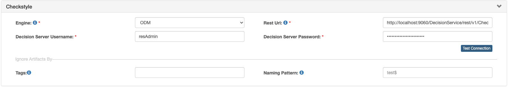
| Field | Description |
|---|---|
| Engine | The checkstyle engine options can be EMBEDDED and ODM. |
| Rest URL | Business decision service execution REST URL. |
| Decision Server Username | Decision Server Username. |
| Decision Server Password | Decision Server Password. |
| Decision Server URL | Decision server URL, Replace localhost with the hostname or IP address of the Rule Execution Server. |
| Decision Server Port | The port of the decision server. |
| Tags | These will be used to ignore artifacts by tag(s). For example: test. |
| Naming Pattern | This pattern will be used to ignore artifacts by name. The pattern supports variables test$, ^test. |
Pipeline Configuration
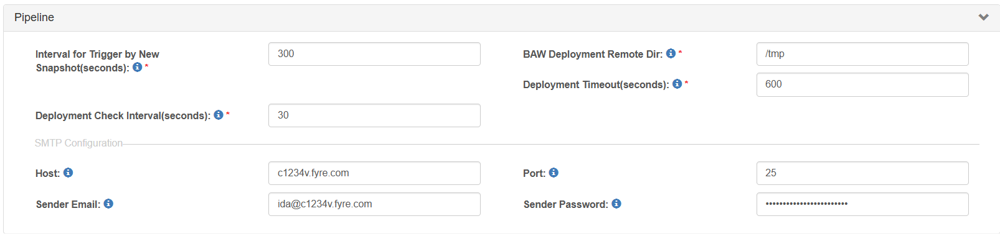
| Field | Description |
|---|---|
| Interval for Trigger by New Snapshot (seconds) | Time interval in seconds for the pipeline new snapshot trigger job to query BAW PC servers. |
| BAW Deployment Remote Dir | Installation Package Remote Dir. |
| Deployment Timeout (seconds) | Timeout for checking if the snapshot is installed on PS and set as the default snapshot. |
| Deployment Check Interval (seconds) | Interval for checking if the snapshot is installed on PS and set as the default snapshot. |
| Max # of builds to keep | If not empty, only up to this number of builds are kept. |
| Days to keep builds | If not empty, builds are only kept up to this number of days. |
| Host | Enter your SMTP email server hostname. |
| Port | Enter your SMTP email server port. |
| Sender Email | Enter your SMTP email server sender account email. |
| Sender Password | Enter your SMTP email server sender account password. |
Search Configuration
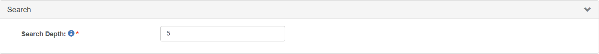
| Field | Description |
|---|---|
| Search Depth | Search (and comparison) depth of Coach/Coach View. |
Set Kubernetes Configuration
The Kubernetes configuration is used to create a Containerized Selenium Grid Server. Tested on Openshift 4.x.
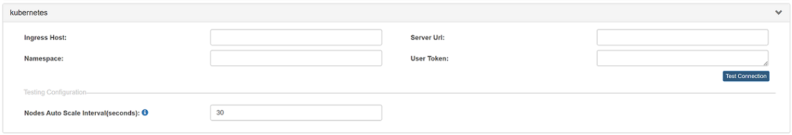
| Field | Description |
|---|---|
| Ingress Host | The subdomain to use for exposed services. For OpenShift, it should be in the format of apps.<cluster_name>.<base_domain>. The <cluster_name> and <base_domain> come from the installation config file. |
| Server URL | Cluster API address. For OpenShift, it should be in the format of https://api.<cluster_name>.<base_domain>:6443. The <cluster_name> and <base_domain> come from the installation config file. |
| Namespace | The namespace/project that you want to use to create your containerized grid. |
| User Token | Token of the service account. |
Here is a sample:
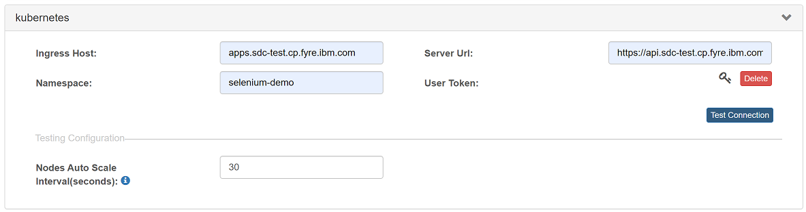
The commands to get ingress host, server url and token:
- For OpenShift:
# Command to get ingress host
oc get ingresses.config cluster -o jsonpath='{.spec.domain}{"\n"}'
# Command to get server url
oc whoami --show-server
# Commands to get user token
oc new-project selenium-demo
oc create sa ida-selenium-sa
oc adm policy add-role-to-user admin -z ida-selenium-sa
oc create token ida-selenium-sa --duration=4294967296s
# Allow users using the "restricted" SCC in selenium grid namespace
# For OpenShift v4.11+ cluster only, and please ensure the logged in user can access the security context constraint (SCC).
oc create rolebinding local:scc:restricted -n selenium-demo --clusterrole=system:openshift:scc:restricted --group=system:serviceaccounts:selenium-demo
- For Kubernetes:
# Command to get server url
kubectl cluster-info
# Commands to get user token
kubectl create namespace selenium-demo
kubectl config set-context --current --namespace=selenium-demo
kubectl create sa ida-selenium-sa
kubectl create rolebinding ida-selenium-rolebinding --clusterrole=admin --serviceaccount=selenium-demo:ida-selenium-sa
kubectl create token ida-selenium-sa --duration=4294967296s